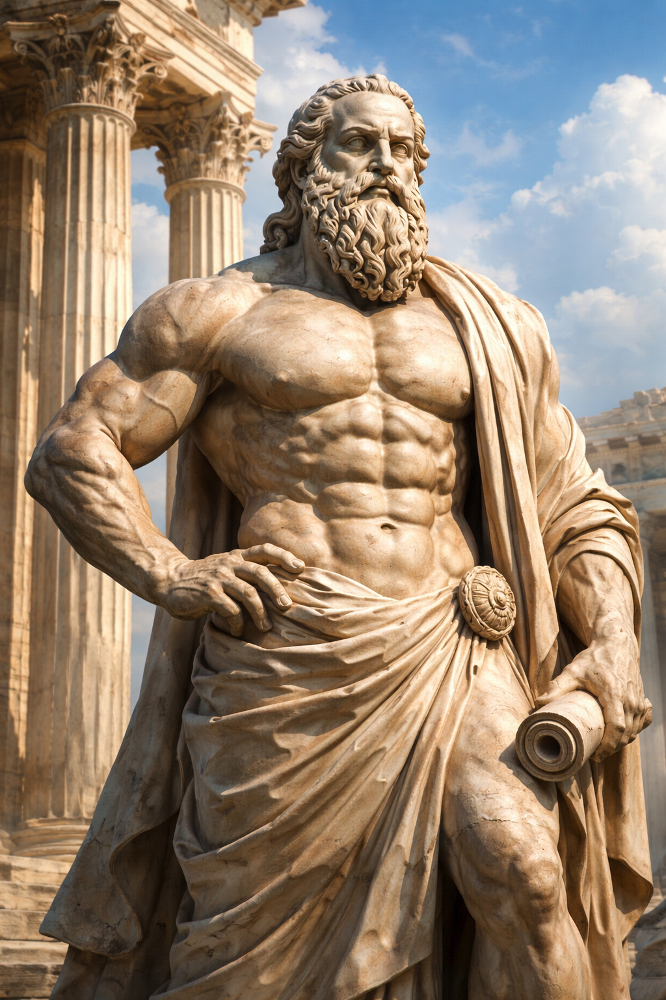

The 3 Pillars of Gaining Serious Mass
Excercise
- Progressive Overload
- Gradually increase weight, reps, or intensity each week
- Forces muscles to adapt → growth occurs due to mechanical tension
- Compound Movements
- Squats → train legs, core, and stabilize joints
- Bench press → chest, shoulders, triceps simultaneously
- Deadlifts → full posterior chain (back, glutes, hamstrings)
- A compount movement is an excercise that involves multiple muscle groups
- Consistency
- Training 3-5x per week is optimal because muscle protein synthesis spikes for ~24-48 hours after lifting
Nutrition
- Eat in a Caloric Surplus
- Consume ~250-500 extra calories/day
- Energy surplus is required because building tissue requires more energy than maintaining
- Prioritize Protein Intake
- Aim for ~0.7-1g protein per pound of body weight (supports muscle repair via amino acids)
- Balance Micro and Macronutrients
- Carbs fuel workouts (glycogen = primary energy source for lifting)
- Fats regulate hormones like testosterone (critical for muscle)
- vegetables supply nutrients necessary for everthing else
Recovery
- Sleep
- 7-9 hours per night → growth hormone release peaks during deep sleep
- Rest & Active Recovery
- Rest days prevent overtraining (Central Nervous System fatigue + muscle breakdown)
- Light movement (walking, stretching) increases blood flow → faster recovery